来源：https://jx8j59ahkjb.feishu.cn/docx/HnijdTy7TotdVBxvBHDc057dnie
当你看到这里的时候，说明你已经站在一个改写行业的风口上，
京东外卖平台重磅推出，诚邀每一位有志之士携手开拓餐饮外卖蓝海市场，共享平台发展红利！
这里是严格对标——生财往期实战手册的排版与内容方式来介绍的
（但不是航海哈！仅供参考）
信息差项目：截至到5月1日，这个政策就没了
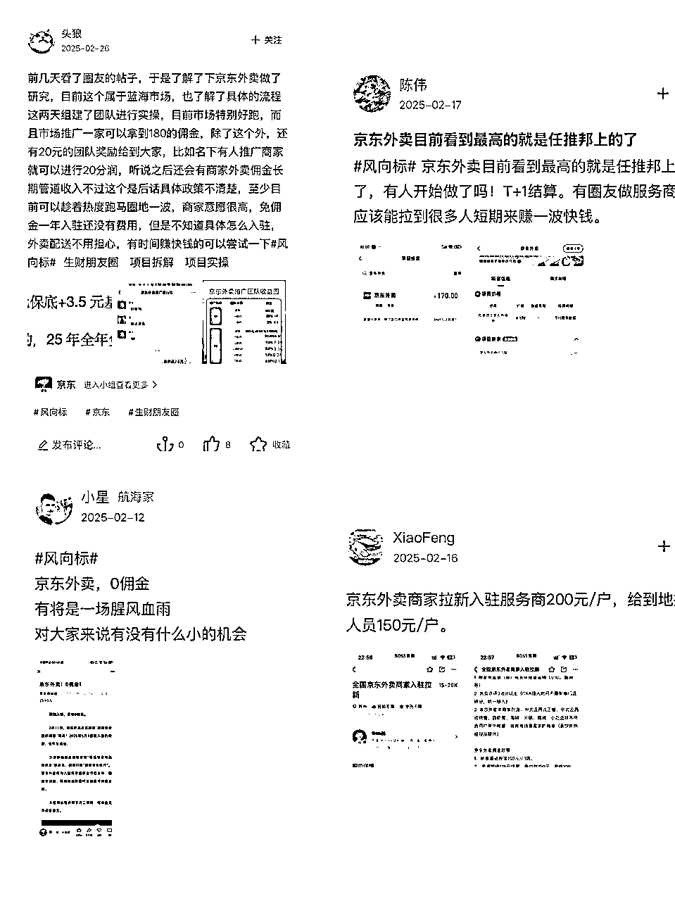
内容出品人： 、@彻易 、@云天、 手册出品方：凌尘团队
出品时间：2025 年 3月 3 日
手册使用说明：内容出品人排名不分先后。本文旨在向你展示一个项目的更多可能性，帮助你更好地理解和实操。
建议：如果需要快速定位到精确内容，可以使用快捷键 Ctrl + F/command + F 的形式，搜索「关键字/词」，查找你想要的内容
欢迎大家来到我的实战手册
开始做【京东外卖】商家入驻项目之前，我们先解决几个问题
1）【京东外卖】商家入驻是什么项目？现在做，有多大机会？
京东外卖，京东外卖是京东创立的订餐平台，2025年2月11日，京东外卖启动“品质堂食餐饮商家”招募，2025年5月1日前入驻的商家全年免佣金，邀请商家而在京东入驻，官方给予补贴
项目近期平台调整变化很多，说明这将是京东生态接下来要重点发展的方向。（京东从2015年就开始做“京东到家”）
但前期服务商的结算处在低迷震荡期，结算周期有可能很长，20-45天左右，但因为第三方渠道不同，结算周期有可能也不同。很可能会没有爆款和出单。
因此，建议大家从一开始就抱着【在平台调整阶段/项目初期尽早入局，但不一定能拿到结果】的心态，把它当做一个长期项目，至少坚持日更满 1 个月，提升内容能力，蓄势待发。
先拿到“入场门票”，抗住周期，才能赚钱。
2）什么样的人适合做【京东外卖】商家入驻？
✅有地推经验、本地生活商家资源的更容易拿结果
✅希望了解本地生活，愿意承担做一个月没有收益的风险
3月份，小白，个人想通过这个项目，迅速获得正反馈，拿到结果已经不建议入局了，但你可以通过这个方式，尝试本地生活是怎么玩的，比如商家BD、美团电商这种的代运营是咋能的...
以下内容由凌尘联合圈友制作而成，仅供圈友学习使用。
由于【京东外卖】商家入驻项目变化较快，所以手册中部分内容可能会过时，请大家持续关注最新动态
同时也欢迎圈友们在实践过程中持续反馈，和我们共同完善，可以联系鱼丸，向凌尘提供修改建议～
（基于2025年3月2日前的公开信息整理）
章节概要
本章节中，我们将一起逐渐认识京东外卖商家入驻项目。
京东外卖本质上是外卖市场的一种新势力，那么它目前现状和前景如何？有什么特点？新手怎么入门？……这些，都是我们在本章节中会解决的问题。
本次手册的重点，就是告诉大家如何从 0-1 跑通项目。
那么对整体的项目概况了解是必不可少的，一起来了解一下吧。
什么是京东外卖？
京东外卖，京东外卖是京东创立的订餐平台，20252月11日，京东外卖启动“品质堂食餐饮商家”招募，2025年5月1日前入驻的商家全年免佣金，邀请商家而在京东入驻，官方给予补贴
京东外卖在哪里可以看到？
目前只能通过手机中的京东APP中的秒送
进入京东APP主界面，“秒送”版块居于显眼的位置，涵盖外卖、咖啡奶茶、买药秒送、生鲜菜场、急用数码、水果果切等细分条目。外卖目前以品牌连锁商家为主，中小商家并不多。
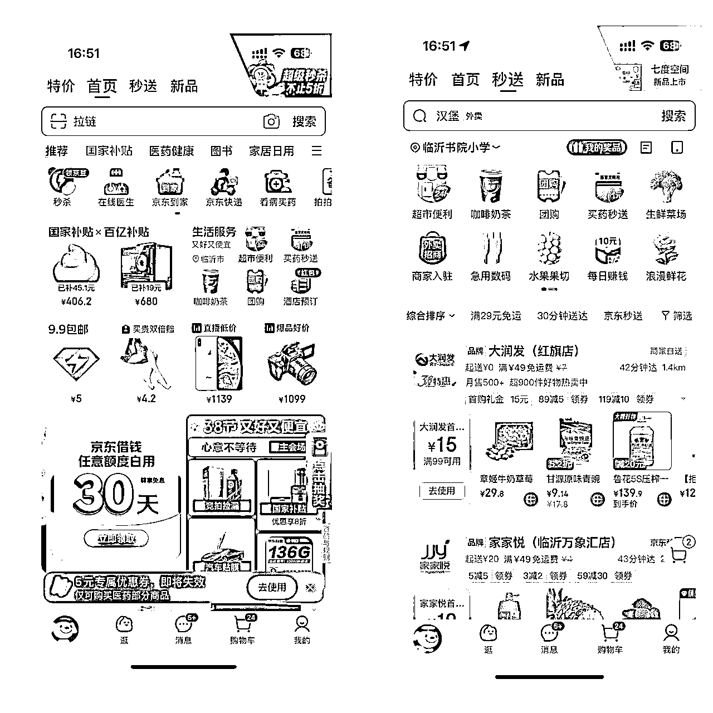
【京东外卖】的特点如下：
商家：5月1日前入驻的商家，全年免佣金。
京东外卖的价格并未比其他外卖平台来得便宜，甚至偏高。
“京东外卖”的入口位于京东APP首页的“秒送”栏目下，点击进入“外卖”板块，会出现定位地址周边数百米至5公里左右的餐饮商家。
绝大部分商家的外卖配送服务由“达达秒送”负责，只有少部分显示商家自送。目前京东即时零售业务基本由达达集团完成履约配送。
外卖骑手的稳定性：
京东集团宣布，骑手收入不会因五险一金而减少，所有成本由京东承担
2月27日，京东外卖上线大额补贴。 3月1日起，京东逐步为京东外卖全职骑手缴纳五险一金，为兼职骑手提供意外险和健康医疗险。
小贴士：官方有效营业的定义为同时满足以下条件：
1、入驻商家需正常营业餐饮店铺！
禁止以虚假门店、“无场地外卖店铺“冒充等虚假信息、虚假销售等违规方式推广；
2、京东外卖商家入驻遵循“先到先得”原则，
谁先提交【商家ID】，数据归属于谁，判定标准以京东外卖官方反馈为准，介意者勿做；
3、请保留正确【商户ID】及【商户名称】
【商家门头照片】在下方进行提交，严禁乱提交或挨个门店ID去试，如发现全部不结算并拉黑账号；
(1）门店审核通过并上线营业；
(2）有效营业日的单日营业时长≥4小时；
(3）商品原价不高于美团或饿了么原价；
(4）商品数量不少于美团或饿了么；
(5）门店有效单量：门店首次开启营业状态后30天内完成订单量≥3单
最近【京东外卖】的风很大，市面上邀请商家入驻，地推团队此起彼伏，原因是这段时间
京东一直在调整内测：
1月，京东宣布拟私有化达达集团，进一步整合资源，为挺进外卖行业做准备。
2月11日，京东外卖启动“品质堂食餐饮商家”招募，2025年5月1日前入驻的商家全年免佣金。
2月24日，京东集团宣布，骑手收入不会因五险一金而减少，所有成本由京东承担。
2月27日，京东外卖上线大额补贴。 3月1日起，京东逐步为京东外卖全职骑手缴纳五险一金，为兼职骑手提供意外险和健康医疗险。
……
这些举动，说明京东外卖大概率将是京东生态接下来要发展的重点方向之一。虽然短时间内因平台调整导致流量不太稳定，但长期来看，依然是个非常不错的信号。
有速度快的圈友已经跑出了很不错的成绩，邀请商家能赚1000＋；但最近更多的都是熬一个月也没爆的情况。
2月20日消息，京东外卖上线一周后，界面新闻记者通过相关业务人士了解到，部分城市订单量增长超100倍。
⚠️目前疯狂扫街的野蛮生长期基本已经过去，官方开始进行规范化调整，很可能到 3月底都会处在商家入驻低迷期，很多都是熬一个月都没有审核过也很正常。
建议早期入局的圈友调整心态，保持正常日更节奏至少 1 个月起，重点提升自己的优质内容创作能力，蓄势待发，熬过周期，未来的你一定会感谢当下努力的自己~
京东外卖于2025年2月11日正式启动，主打“品质外卖”，聚焦中高端餐饮商家，通过免佣金、流量扶持和履约补贴快速扩张。上线一周后，订单量增长超百倍，覆盖39个城市，吸引近20万商家申请入驻。其核心竞争力包括：
佣金政策：2025年5月1日前入驻的商家全年免佣金，配送服务费按距离、时段等因素动态计算。
骑手福利：为全职骑手缴纳五险一金，提升履约稳定性。
流量入口：京东App首页“秒送专区”独立入口，优先级显著提升。
行业市场：艾媒咨询的数据显示，2024年中国在线餐饮外卖行业市场规模为16357亿元，预计2027年市场规模将达19567亿元。
为从该市场分一杯羹，同时寻找更多业绩增量，京东外卖或许还会有进一步的动作放出。
政策红利期：京东外卖处于扩张初期，免佣金政策吸引大量商家入驻，预计2025年5月前为黄金窗口期。
市场空白：美团、饿了么抽成高达20%-30%，商家对低成本平台需求强烈。
高客单价优势：京东秒送客单价（40元以上）高于美团闪购（30元），适合中高端商家。

您将立即获得1XX元现金佣金奖励！让每一份努力都转化为实实在在的收益！项目的优势是很多商家早就受够了美图、饿了么长期的压榨，
京东外卖上线就是0佣金，推广起来很顺畅，沟通无卡点，干起活来就特别得劲！每成功签约一家优质餐饮门店入驻京东外卖，
3月1日起京东外卖可推广城市为125个城市主城区，
即县城和县级市暂不纳入拓展范围之内且不计算为有效商户，125个城市名单见下图
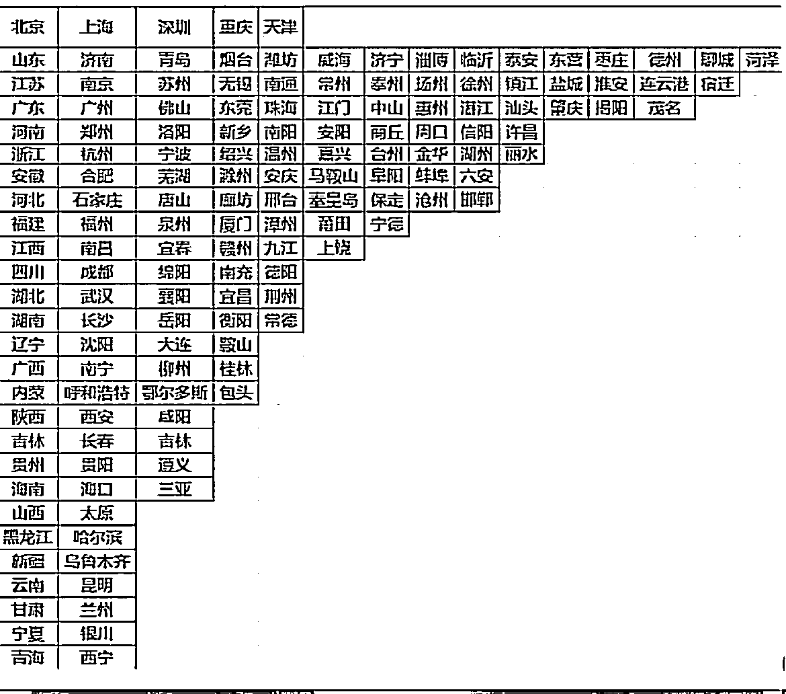
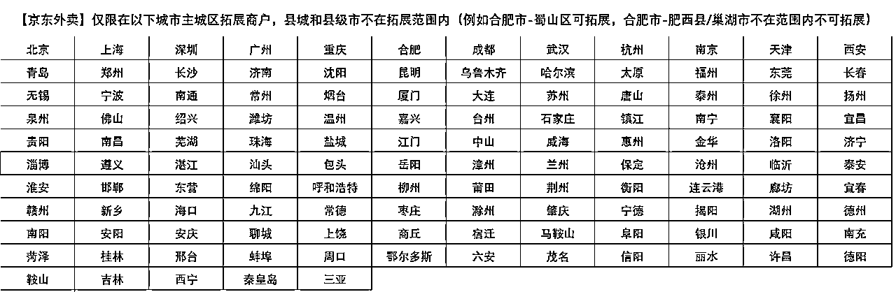
【京东外卖】本地生活的变现形式包括：
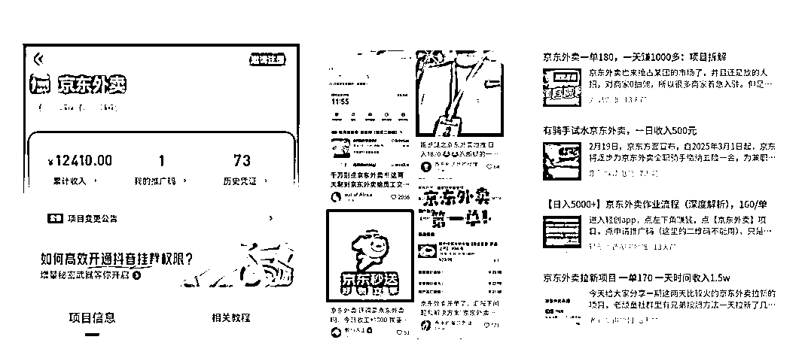
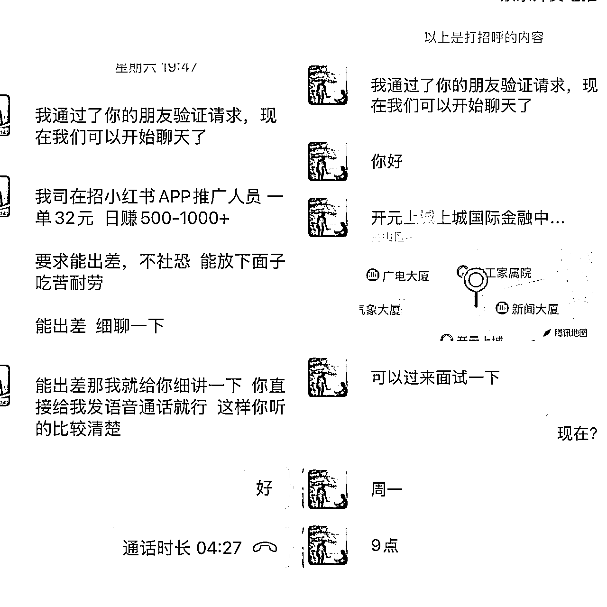
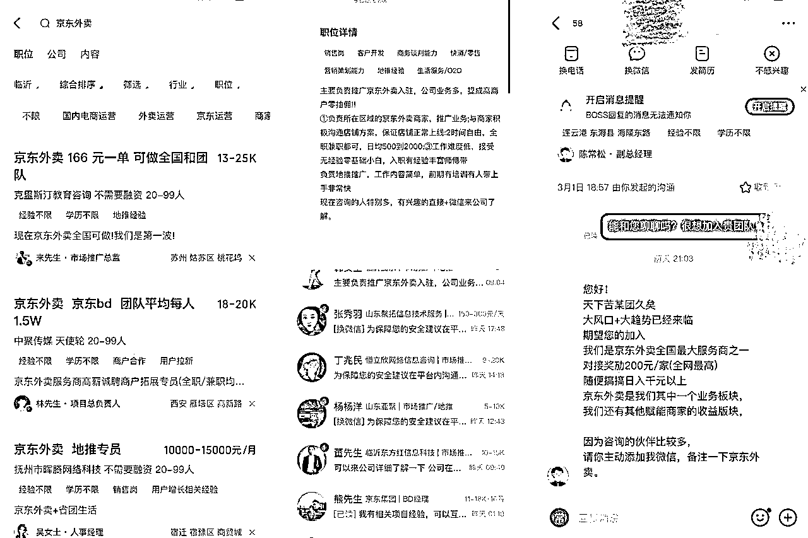
（4）代运营服务：为商家提供店铺装修、活动策划等增值服务，按月收费。
（5）跨平台整合：结合抖音团购推广，为同一商家提供“线上曝光+京东配送”组合方案。


您将立即获得1XX元现金佣金奖励！
让每一份努力都转化为实实在在的收益！
项目的优势是很多商家早就受够了美图、饿了么长期的压榨，
京东外卖上线就是0佣金，推广起来很顺畅，沟通无卡点，干起活来就特别得劲！
与其他外卖项目相比，京东外卖项目具有以下优势：
推广单价高：目前京东外卖推广拉新项目推广奖励丰厚。5月1日前入驻优惠倒计时，商家急切入驻，为推广员创造绝佳条件。努力拓展，日入上万并非遥不可及，利润空间相当可观。
此刻，我们走在大街上看餐饮门店都像是一座待开发的金矿！
5月1日倒计时已启动，每一天的延迟都可能让商户错失全年黄金政策。
2. 案例参考
1. 目标商家筛选
2. 合作谈判要点
京东外卖商家入驻CPS项目的核心红利期在2025年上半年，需抓住免佣政策和流量扶持窗口。建议从高潜力商家切入，结合线上线下多渠道推广，并通过代运营等增值服务延长盈利链条。
官方数据及政策文件可通过京东联盟后台（京东联盟）实时查询。
结算：审核最晚周期月结，最快3-5天
规则变化：就像3月结算审批规则就比2月要多了很多条件，4月呢？
包括服务商：新项目刚启动的时候，各方面的规则机制还不完善，同时我们服务商对项目官方的要求理解也不够透彻，会出现早上刚解读完政策，下午又会有追加约束的条款
京东3月份最新的政策：
京东外卖服务商激励细则（2025年3月）
京东外卖服务商激励细则2025年3月补充方案
“所有的数据必须符合官方的标准”这一基本原则
对接服务商/尽快拿到第一手的信息，专业的解读，随时应变，减少损失
（我们已经和省团、任推帮方面的人，建立联系了，欢迎来合作）
【任推帮】在线教程：官方培训：https://n.dingtalk.com/dingding/live-room/index.html?roomId=6Z7s1a1jK2&from=QRCodePhoto
【省团】在线教程：官方培训：里面略有推广，暂不公布，可来找我，单独要
团队/招人的放大：前期测试期，盲目去做，尤其是号召大量新手去做，培训不到位，是有一定风险的
未经培训的不了解【京东外卖】盲目展业，对商家虚假承诺，会有很多的不合格上传出现（实际上也出现了）导致项目数据质量差，进而使地推伙伴白白浪费了大量时间；
这样的结果不管是对公司还是对一线都是没有好处的。
相对应的解决方式：
最近我们正在加紧做一些事情：
1、保持和项目的沟通，尽快理解项目方的要求，尽可能的把要求全面的告知团队；
2、最近会议室培训会非常多，甚至会不定时开会，望大家保持通信畅通。
3、各地专训工作有序开展，招人很重要，培训更重要。
省团：致京东外卖地推团队的一封信！
https://mp.weixin.qq.com/s/Y9HJQHEgUyl1SMmWnZOJrA
任推帮：致京东外卖地推团队的一封信！
https://mp.weixin.qq.com/s/Pu_OK53xjXxcjaV3C0BhYQ
为什么选择渠道商呢？因为不需要垫资，
信息差：据京东的朋友说，和京东直接签的服务商，要缴纳押金10w，而且结算周期在27-45天。
你提交商家资料—京东核实，给你发账单(不是钱）—财务审批—再打款
由于京东外卖上线时间短，具体服务商收益未来应该更丰富，但投资都有风险，自行判断
1） 商家入驻激励 (仅餐饮业务200元/店，目前是月结）
2）商家佣金分润（餐饮预估1-2%）
服务商需要持续投入做城市规模，会有考核和清退机制。
只负责商流运营，不负责配送业务；负责的商家包含：餐饮、零售
企业资质：必须是独立法人，有固定办公场地，具备营业执照、税务登记证、组织机构代码证（或三证合一后的营业执照）。
经营范围：需包括培训服务、咨询服务、代运营服务等相关内容
团队规模：要超过10人，具备BD、商家运营等完整的生活服务 业务团队架构。优先招募有资源、懂业务、懂经营、懂管理的本地生活餐饮业务公 司。
保证金：服务商入驻需缴纳10万元保证金
申请条件
京东秒送城市代理商，在这里有两层含义。
1：京东秒送城市代理商，即京东外卖城市服务商，很多人并不能够很好的理解代理商和服务商的定义，于是把京东外卖城市服务商，混淆为京东秒送城市代理商。
所以如果你也是混淆概念的话，那么你要找到，就是京东外卖城市服务商。
京东外卖城市服务商，有且只能从京东秒送官网（电脑端）申请授权。
2：京东秒送城市代理商，即京东外卖区域代理，
京东外卖区域代理，属于二级授权，是从已经取得京东外卖服务商资质的服务商手里，获取其管辖范围内的区域授权。
京东外卖区域代理，有且只能从京东外卖城市服务商申请授权。
明确了京东秒送城市服务商的2层定义之后，我们接着来聊授权。
1：京东秒送官网
前面我们说到了，京东外卖城市服务商，必须通过京东秒送官网（电脑端）申请。
链接：京东秒送服务商——官方申请
那么具体应该怎么做呢？
首先，你需满足以下两个条件。
如果你具备这样的条件，那么不要犹豫，直接从官网。
申请流程如下：电脑端搜索“京东秒送”或“京东到家”→ 进入官网 → 导航栏点击“入驻合作” → 选择“服务商合作” → 提交资料等待审核。
特别提醒：如果你不满足上述的条件，千万不要浪费时间，毕竟截止5月1号黄金推广期，越来越近了。
目前比较火的就是两个服务商、
一个是省团、一个是任推帮
省团，2月直推给的180元/1家，3月直推给的166/1家，2月份秒过审核，3月份以待后效
任推帮给的价格是170元/1家，满500家，按190元，截至3月1日也是，但有可能审核慢，但邀请朋友，你有2%的抽成
省团生活App，吃喝玩乐都有优惠
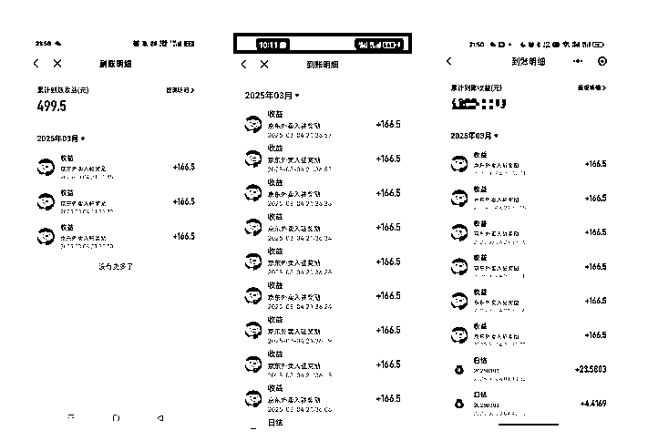
省团生活APP
下载链接：https://a.app.qq.com/o/simple.jsp?pkgname=com.hs.stsh.android
---------------
或应用市场搜索【省团生活】下载注册，填写邀请码：sc888
这是2月份的——结算规则
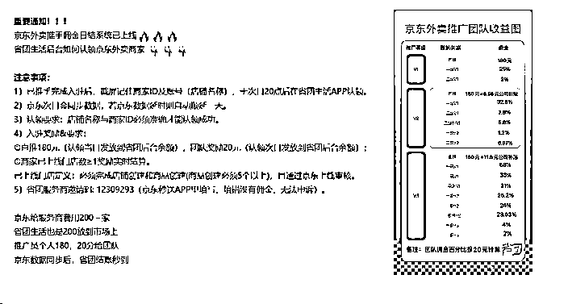
3月份2：
奖励180变166.67，20团队分佣18.52（扣税），3月1日起更改为月结
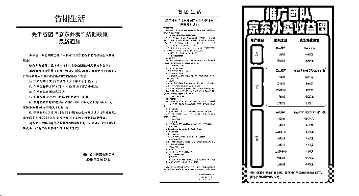
3月3号——
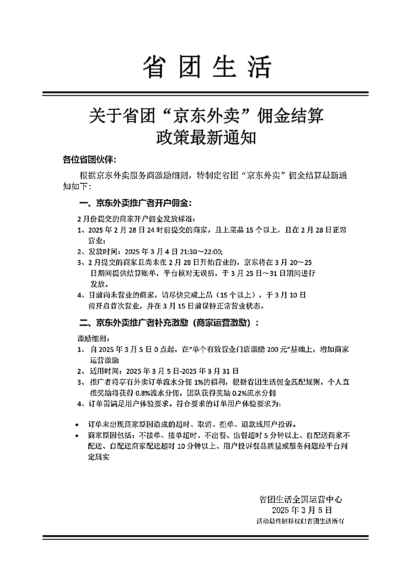
京东外卖-省团生活后台奖金秒到账视频
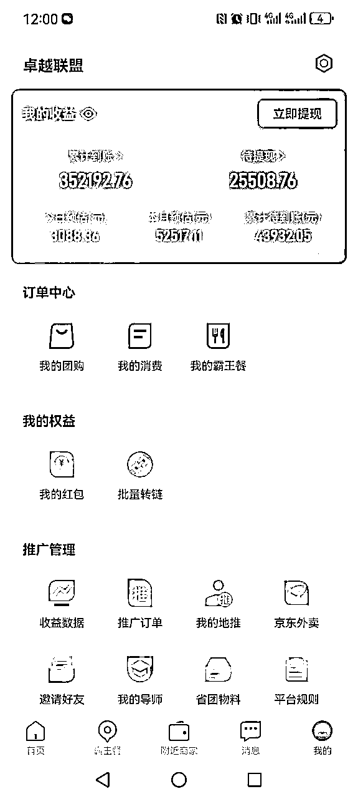
京东外卖进件-省团生活-奖金秒到账流程图
拜访商家入驻→开通门店（中途邀请码填写，填错无佣金。
省团全国统一BD码：12309293）→等待审核通过→登录商家APP查看是否有运力→创建门店上线菜品且绑定商家收款账户后上线营业→平台扫交任务作业数据（此步骤可区分出是哪个推广员作业的数据）
商户需要准备的资料
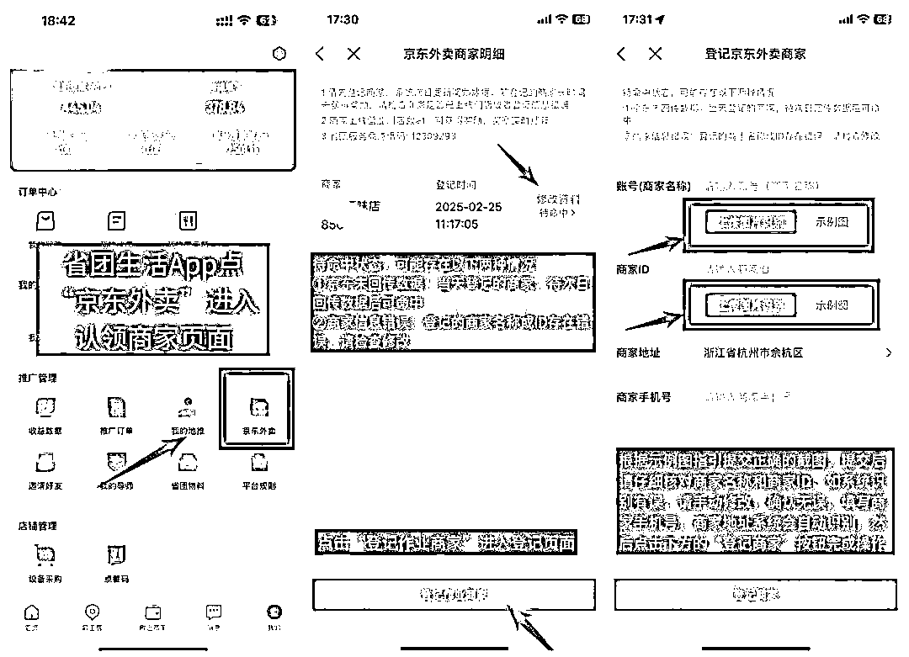
京东商户开通
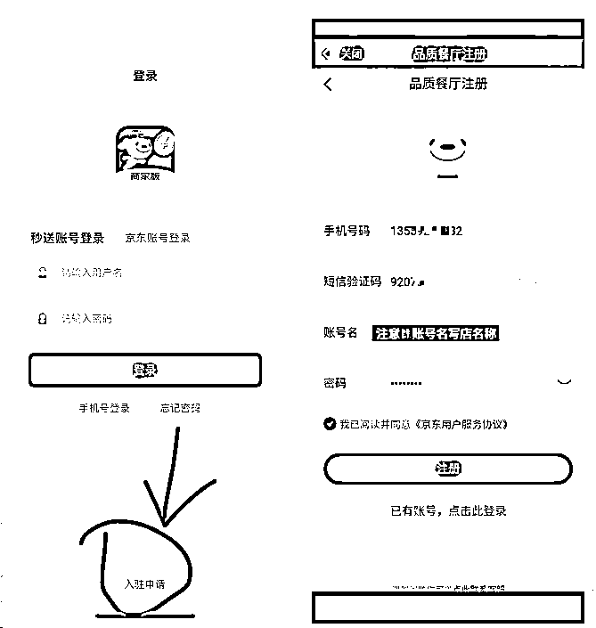
这个页面有两点注意，
一是：这个手机号码一定要填写经常使用的手机号码，对于连锁品牌来说，大家可以填写外卖负责人的手机号码，这个号码后期是不好更换的。
二是：一定要填写容易记住的账号名和密码。大家把该页面的信息填好后，就可以获取验证码，并点击注册、进入下一个页面了。第二步，进入店铺资质信息填写页面，这步是整个入驻环节里最关键一步。
（1）先是联系人这块，大家填写自家店外卖负责人姓名就可以，如果你自己负责外卖运营，你就填写自己的姓名；至于联系电话那块，系统会自动生成你在注册页面填写的电话。
（2）经营品类这块，大家一定要选择“外卖美食”，不要选别的，你选了其他品类京东是不给零抽佣优惠的。
（3）商家名称这块，你填的信息务必要和图片信息一致，大家填写门店名称或者品牌名称即可。
大家注意一下，注册的时候这个账号一定要写他店的名称。后面认领的时候也要跟这个店名称一致，才能认领通过
商家名称 登陆密码这个界面记得截图，后面上传菜品可用
分类选：外卖美食，商家才享受全年免佣金
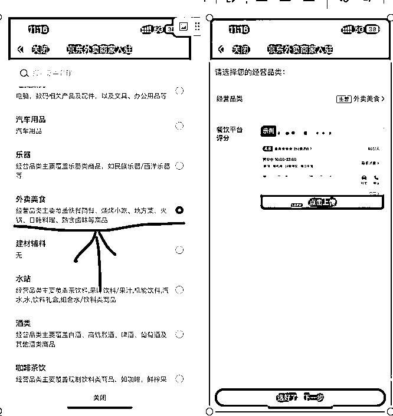
从各平台截图评分上传，四选一即可
必须团购里的完整截图，不能带外卖、快送字样
优先高德，当天过审！
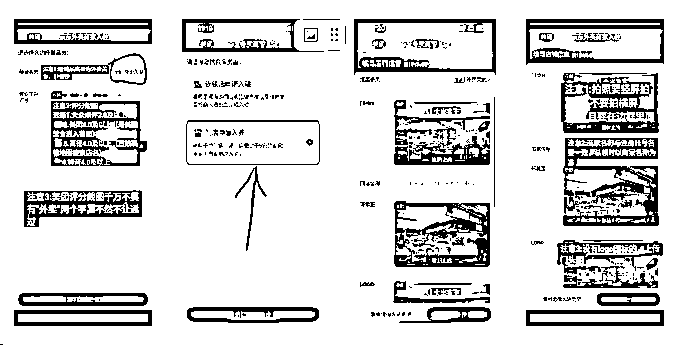
照片横拍有时也能过，邀请码要检查仔细填正确
全国省团统一邀请码:12309293
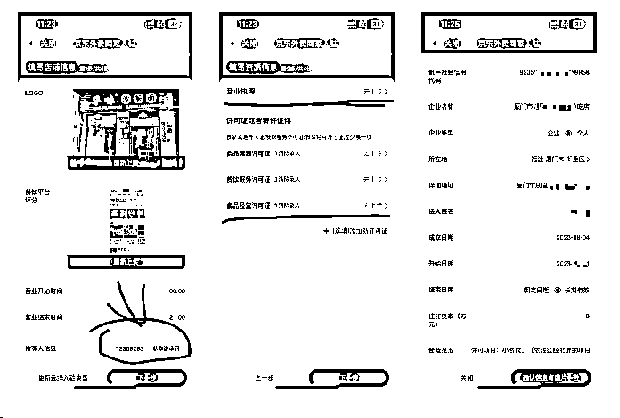
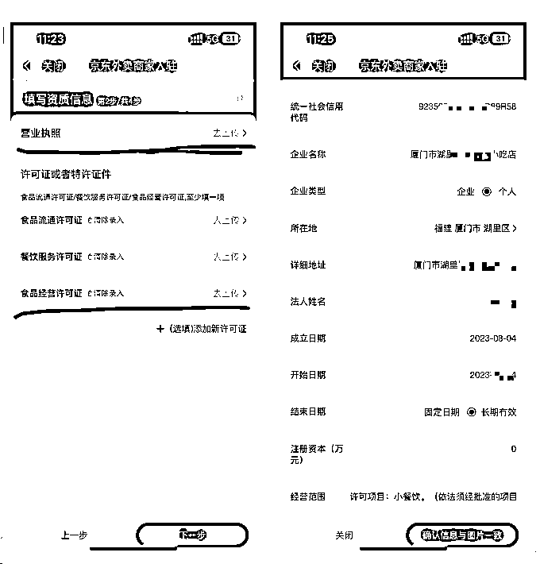
上传营业执照，内容、日期要检查清楚，上传食品经营许可证，内容、日期检查清楚，上传法人身份证，正反面
这一步比较简单，大家把营业执照上传后，系统通常能匹配出相关信息，如果有的信息没匹配出来、或者匹配错了，大家就手动填写下。第五步，在配送方式选择页面，大家根据自己的需求选择。
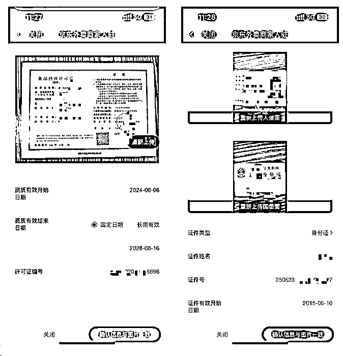
没有达达秒送的地区选择商家自配，填写银行卡信息
（1）在这个页面，如果你之前没搞过自配送，那就优先选择达达秒送；如果你想自配的话，那你就选商家自配。
（2）在结算方式这块，京东现在有三种结算方式，一是“统一结算”，这种方式是，甭管你有几家门店，京东把钱统一打到总部银行卡上；二是“分门店结算”，这种方式是，每个门店独立收款；三是“分门店组结算”，这种方式是京东按你的门店分组进行结算，比如北京的门店打到一张银行卡上、上海的门店打到一张银行卡上啥的。这几种结算方式里，“分门店组结算”相对灵活，大家如果没想好用哪种方式结算，可以先选它，因为选了它以后，可以实现其它两种结算方式。
（3）后面的收款方式，大家选择银行卡收款就可以了。都填写完之后，大家即可提交申请，进入审核的环节。
第六步，大家提交完申请后，会进入如下的“审核中”页面。
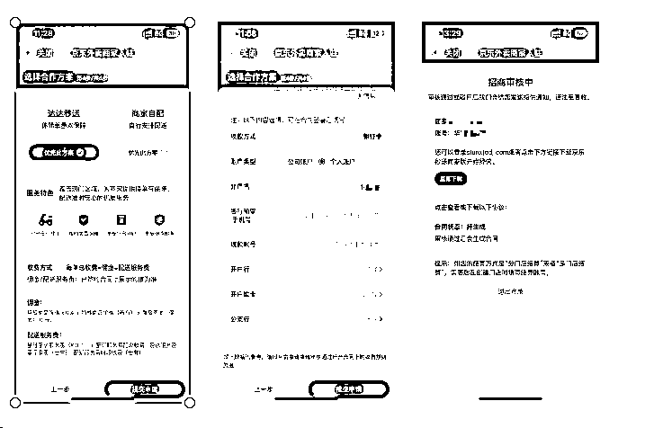
您可点击【京东APP】-【我的】-【我的钱包】-【余额】-【立即开通】，按照页面提示指引，完成操作即可开通。
京东钱包开通
白名单以外的真实的品质堂食餐厅的要求？
（1）商家有堂食（餐）或实体经营店铺（小吃，卤味等）；
（2）商家经营品类：中式及西式正餐、中式及西式快餐、自助餐、海鲜、火锅、烧烤、小吃卤味、等符合用户早中晚餐、下午茶、夜宵等场景需求的商家（咖啡茶饮类烘培店蛋糕奶茶店不能入驻切记切记切记）；
（3）可能会基于其他餐饮平台评分综合判定是否品质堂食餐厅。
注：品质单店签约时，需向对应渠道经理报备，初步审核通过后可进行签约。最终是否通过以客服审核为准。
商家的结算账户必须是对公的吗？
可以不需要对公；可法人、非法人结算
超市可以做吗？
现在只开放餐饮行业类目，超市的商户是不能做的，咱们全力推进餐饮业入驻京东外卖平台
如果跳过这个当前界面，没截图，怎么查那个ID呢？在哪边可以查？
返回到注册页面，底下有一个入驻申请，打开，就出来商家ID了
审核要多久？
人工审核暂时无法精确，现在都是人工审核，京东尽力做到日清审核。
最低不会超过3天，有三天的可以发给我，我进行投诉，系统审核AI审核的事情会在2月底尽量完成上线。这段时间大家要多些耐心给到京东
连锁店开很多家只有一个id怎么结算工资？
以实际id的数量为准
怎么知道有没有审核通过？
通过了需要再去签约下一步
目前没有系统的支撑，需要二次与商户跟进
京东客户端哪里点外卖？
京东app上方切换到秒送，京东秒送就是京东外卖
必须是大众点评3.8分及以上的才行吗？
评分门店的要求是大众点评≥3.8分，美团/饿了么/抖音/高德≥4.0分
这种商家已经有账号的（金婆婆重庆小面阳光城店），就不能做了吗？
改账户，可以组合，再提交审核，以实际官方审核为准
商户经营款多久到账？
T+5结算周期
邀请码没填进行到某些步骤了，还能重填吗？
一定填邀请码，无邀请码平台无数据，所有业绩核算已邀请码为准
连锁的餐饮新店还没开业可以入吗？其他的店有评分可以注册吗？
可以
已经认证了，但是外部显示未认证。这种是什么情况？
在点一下认证，如果确定是认证了的，就暂时不管等京东客服审核
商家结算方式那里单体店就选择分店结算模式就行了吧？
建议选择:分门店组结算，后续操作灵活。
京东的提成也要扣税吗？
省团直推伙伴扣税后得166
渠道后续那个25块钱，是他达到考核后，就能立马给他打款吗，周期多久？
达标后，自己统计说一下，就安排结算。
京东外卖里面的优惠是需要商家承担吗？
需要，但是前期京东会给补贴，这个商户分两种一种是自己套餐满减设置，一种是官方发券，券优惠的部分是官方补的
原来没有上过外卖平台的可以做吗？
不要做
连锁店的加盟店不走CKA，走单店模式会影响结算嘛？
有属于自己的营业执照就不影响
营业执照一直失败怎么整？
看他的营业执照是否清晰，是否过期，是否年检，拍照是否有问题
如果顾客点餐的话，超过六公里商家会不会显示出来？配送费是怎么算，是算在商家头上还是顾客身上？
商户自己可以选配送范围的。小于6公里就是3元每单，超出范围的配送费理论上是用户出才对。
保底1是什么费用？
保底的意思应该是 6%/最低1元，不是6%+1元
显示招商审核中，实名状态认证中的下一步该怎么操作？
等审核就好，做好二次回访，审核人工审核没那么快
配送中间有出现问题的话商家要找谁处理？
跟美团一样，京东官方客服会处理的
自配也是3元吗？
自配看商户选择哪家运力公司，由运力公司方出配送价格
两个不同的店，都是同一个法人，还需要再次认证吗？
需要
商家营业执照上的人是房东，身份证提供谁的？
都是法人
如果商户成功入驻没有填我们的邀请码可以补填吗？
不可以
如果现在入驻的时候，周边没有运力的话，那么我可以选择自送吧，后期是可以改的，对吧？
是的
出现提示操作失败:请完整填写食品经营许可证所需信息是怎么回事？
所有证件清除一下，重新上传食品经营许可证，证件上的人，跟营业执照的人是一个吗。是的话换其他的证试一试。
这种打印机(商鹏）支持京东到家的，但是没有在平台已对接上面，能用吗？
可以试一下，市面上有人尝试用美团的打印机也可以配置。平台已对接：飞蛾打印机，佰时打印机，大趋智能打印机，佳博云打印，接单小帮手打印机，老板有单打印机，芯烨云打印机。没有的试一下，试完就知道了
银行卡呢，必须是法人的吗
可以法人结算，也可以非法人结算。一个是对公，一个是银行卡，对公就要选择公司的对公账户，银行卡可以用非法人名下的卡验证
信息显示是该区域暂不合作，这种的不能作业的是什么原因呢？
提供截图，地区也报一下
注册的时候显示已经注册 什么情况？
首先账号可能出现雷同、有可能是同店名影响加几个字就可以了。比如：xxx路xxxx小区
商家注册的时候的账号，不是到时候外面平台显示的店名吧？
不是
加盟店这种可以做不，加盟店是单独的法人，营业执照？
可以单独入驻
取餐地址可以改吗？
可以
美食城的商户只有营业执照，但美食城有相关许可证，给他们通用的，这种可以入驻吗？
他们都入驻过美团吗，按照美团的标准入驻资料，可以入驻
没有打印机是否可以接单？
配置好打印机，系统会自动接单，未配置打印机需要手动接单，手动接单则是需要在APP上或者PC端点击是否接单
业务员作业设置的密码，已经待审核了，现在登陆不上？
登陆时选择的不是京东账号登录
登录方式有问题:要使用当时注册的账号账号和密码进行登录。或者商家当时填写的手机号码进行短信验证码登录。下方账户名和密码是商家登陆时要用到的，所以必须要记住。
出现提示信息比对不通过,请检查信息的正确性怎么回事？
可能是营业执照的法人跟上传的身份证人不一致，也有可能你填的门店跟这个营业执照上面的门店不是同一个
关于信息对比不一致的问题，再填写一次正确的食品经营许可证编码，有可能系统识别出现编码识别错误
法人在外地，认证刷不了脸的，可以选择银行卡信息认证吗？
可以。
没有打印机，怎么打小票呢
已经和京东确认打印机不配置不影响结算
商家门店编码是什么？
门店编码非必填项可以先不填
连锁店怎么建店？
连锁店总店建店成功，其他门店可以远程批量建店
连锁店入驻方式？
连锁店的判断标准:1、统一LOGO，2、商标注册证，3、总营业执照，4、统一对公结算
任何说是连锁店，但是是单独营业执照的，都按照单店入驻操作
没有图片怎么上架商品？
必须要拍摄图片的，拍摄商品图片就好
非连锁，一证多家门店，4个门店，只有一个执照，怎么入驻？
入驻肯定是可以入驻的，不用担心，就是后期创建门店可能会有问题。
小餐饮店（三小行业）营业执照三合一，没有其他证，许可证那里提交了进行不了下一步怎么办？
上传两次营业执照
上架菜单的流程有没有视频教学，能从美团导过来吗？
有教学图文，不用担心这个问题。
打印机:能用wifi连接吗，有没有操作视频教程
有蓝牙连接，有教程
店铺通过审核怎么查看
登录账号以后点击-开店任务-查看签署情况
商家地址不一样，但是营业执照是同一个店，怎么处理
应该是可以入驻的，有很多已经成功了
上传许可证的时候三个都要上传吗？
在第二步上传营业执照以及餐饮许可证时只上传一个就可以了，如果不通过那可能是因为营业执照与餐饮许可证不一致
必填门店电话，没有座机怎么处理，随便写的也验证不通过
填写手机号码就可以
店铺门头名和营业执照不一致怎么入驻
不影响入驻
填写法人身份信息后提示信息比不通过，核实了很多遍，信息没有问题是什么原因导致的？
一定是有问题的，不然不会不通过，如果不是认证的问题可能是之前填的与后期提供的认证信息不符，因为已经测试过一次了。
连锁店是否需要每家店都跑一遍去操作
不需要，后期商家登录PC端下载模版批量导入即可
审核相关时间？
1.建店审核，审核时间0.5天
2.合同签约审核，1-2天
3.建立门店，上传菜品，设置门店上线接单。
以上三个流程最少需要2.5天，才能完成一家有效门店入驻。
怎样更高效抢占市场份额？
根据审核效率以及抢占市场，统一要求业务员分成三个环节完成商家入驻
第一个环节
规划好每日拓店区域，按片区完成建店审核，添加商户联系方式。避免二次回访作业因距离远造成效率低下的问题减少拓店成本。
第二环节
根据前一日拓店审核完成情况，可根据个人能力，选择远程沟通或者上门引导商户及时完成二次回访工作，进入第二次签约审核时间，为第三次门店上传菜品上线做准备。
第三环节
签约审核通过后，会有短信通知商户是否合同生成完成，展业过程中会添加很多商户，为了方便管理，为商户做好备注时间，方便快速查找到预计完成审核的商户，询问商户是否已经接收到短信可以签约，做好第三次回访门店上线工作。
按照以上步骤，可以有效抢占到市场份额，以及高效完成门店入驻工作，兑现更多入驻奖励。
关于初步审核不通过的问题？
初审不通过，已填邀请码和未填邀请码暂时不能做变更。重新入驻的步骤暂不需要再次填写邀请码。
银行卡必须绑定法人的吗？有的店铺是房子房东办的营业执照租出去了
可以不绑定法人，如果资料不过的话，先绑定法人，后面可以更改结算账户
校验不通过的原因是？
可能系统存在BUG，这个问题昨天发生了不少，观察一下照片拍摄识别出来的信息是否正确
店铺想中间休息，这个时间怎么设置？
经营中途要休息点下线就好
客户问一年后收费是怎么收的？
专送：扣点6%+1元保底+3.5元基础履约服务费；
自送：扣点6.5%+1元保底
清真类有需要备案吗
先尝试，按营业执照和食品安全许可证
驳回原因:(该区域暂不合作)怎么办？
更换运力，改成自配送
比如有五十家连锁店，其他业务员已经单独注册了二十家，我们要拿啥凭证来区分那二十家别人单独注册的呢？
第一个人使用该资质注册了，第二个人就无法再用该资质
昨天有个忘记填邀请码，目前审核已经过了 还能绑定嘛？
不可逆，无法修改
商家知道帐户号和密码登陆后，拿到ID号，被其他业务员提报，这个怎么算？
我们以首个报商户ID的业务员来结算
如果是连锁店提交了总店的，其他的分店需要每家都提交领取佣金吗？
可以批量开店
法人不在店，如果走对公账号收款验证的话大概要等多久，有例子吗？
半天
有的商家以前用过达达，直接申请入驻就到最后一步了邀请码，营业执照，任何东西没有填写，怎么弄？
这种就不用管了，不会太多的。不用太纠结这些问题，现在没填邀请码就是不可逆
驳回原因是其他，其他条件这个门店都符合，这咋办？
重新上传一次，关于评分那一块也上传一下
商户用以前的，他有注册过京东账号的，直接登录可以吗
可以
法人证件这里信息对比不通过，怎么办？
身份证重新拍，不要留有边边角角
还有再检查一次正确的食品经营许可证编码，有可能系统识别出现编码识别错误
全国连锁，加盟店可以做不
可以、所有加盟店都可以，直营店就不行
招牌和美团上面的名字不一样。比如门店招牌名字叫樊司令汤包，美团叫樊傻儿汤包，这种的话上传会不会影响审核？
不会
京东外卖任务上传省团上传出现商家名称错误，按以下方法操作
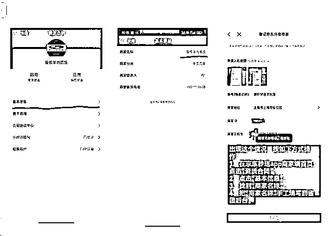
商家名称错误
商家平台评分标准要求
截图选择团餐，团购餐券页面
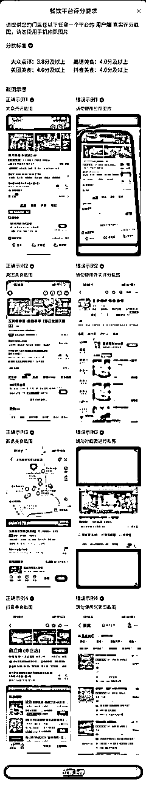
商家注册审核通过后，收到【京东到家】短信提示，就可以上架品
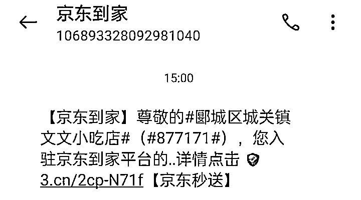
待命中状态，可能存在以下两种情况:
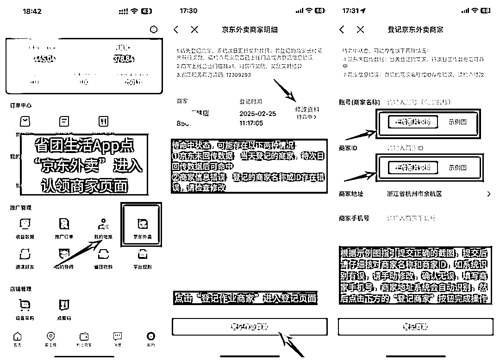
①京东未回传数据:当天登记的商家，待次日回传数据后可命中
②商家信息错误:登记的商家名称或ID存在错误，请检查修改
平台已对接：飞蛾打印机，佰时打印机，大趋智能打印机，佳博云打印，接单小帮手打印机，老板有单打印机，芯烨云打印机。
第二大部分，系统对接/打印机对接环节。系统对接那块，目前市面上所有的收银系统京东都已经对接，大家可以自行联系一下收银系统的厂商，但目前大部分系统对接周期会相对较长，大家前期先用打印机接单就完事儿了。
我看了下，现在市面上主流的几款打印机，除美团外，几乎都出了对接方法，大家可以翻翻各打印机品牌公众号，几乎都有详细教程。市面上主流的打印机品牌教程我给大家扒了几个：
（1）飞鹅打印机绑定流程点此进入；
（2）芯烨云打印机绑定流程点此进入；
（3）商鹏打印机绑定流程点此进入；
（4）大趋打印机绑定流程点此进入；
如果找不到的话，就去拨打一下打印机那边的官方电话，一般都有解答。第三大部分，店铺上线环节。这一部分，
对于单店的话，京东给大家做了两张长图，大家可以先看下，不明白的可以私下问我，我帮大家详细解答。
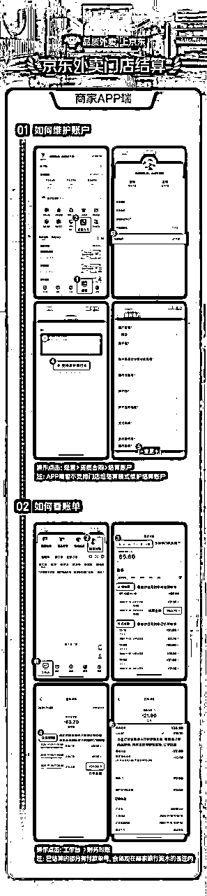
对于连锁品牌的话，大家进入电脑端https://store.jddj.com/，选择京东账号登录：
之后点击“商家设置-商家资质合同”，查看一下所有的内容都已填写完、且后台显示通过，就代表你已经入驻京东外卖了。如果你发现你未绑定京东钱包，你就点击一下“绑定钱包”，然后点“注册”，把“注册”页面“账户管理”里面的商户号复制出来，并粘到商户后台里，即可绑定。
另外，大家注意，对连锁品牌来说，甭管你是建单个门店还是建多个门店，在“商家设置-门店设置”这块，你都要点击“批量导入”，而不要点击“单个创建”。
之后在表格中，大家把以前在美团、饿了么填的信息填入即可。注意下，在配置那列，接收商家账号密码的手机号，虽然系统显示是非必填，但是实际上必填的，因为你填了，你的子门店手机号才能收到该门店的账号密码，子门店首次登录必须要使用该账号密码。
另外，配送半径那块，大家前期填个3000米-3900米就可以了，估计大家心里也都明白，京东前期肯定会用跟美团相似的流量分发逻辑，你填太大的配送半径，肯定会对下单转化率有影响，进而影响你店面的流量。
剩下的东西都没啥难度，整体上，京东外卖填写门店资料、资质，以及绑定结算等工作都和美团挺相似的，我相信连锁品牌的运营基本都能搞定
提示提交三证合一证件
提交营业执照就可以
任务2月份提交成功多久可以提现
只要3月1号到3月15号商家一直在营业，京东就会通过审核，马上会回传给省团，我们公司不是人工打款，直接自动打到大家账户上
怎样可以显示品质外卖的提示？
5✖️5公里范围内，有5个品类，有8个商家在营业，就有品质外卖的圆圈
手机已经上线外卖店铺成功，为什么没有数据？
京东秒送后台显示商家营业，但是要T➕1显示京东后台
运力配送选择
一二线发达城市选达达，配送费3元，根据运力问题，其他可选自配送，也就是第三方平台配送，配送费会贵一点
后期有没有管道收益？
以后京东会开，现在不会，之后是每个城市一个区一个服务商，看哪个区业绩最好就会匹配给哪个服务商，目前省团排名前四，多做39个城市之内的区域，之后省团拿到区域的服务商，就会给开发伙伴流水分润
在【京东首页】-上方【秒送】频道-点击【品质外卖】即可进入京东外卖频道
门店不允许上线，门店资质未提交，门店营业钱的上线效验失败
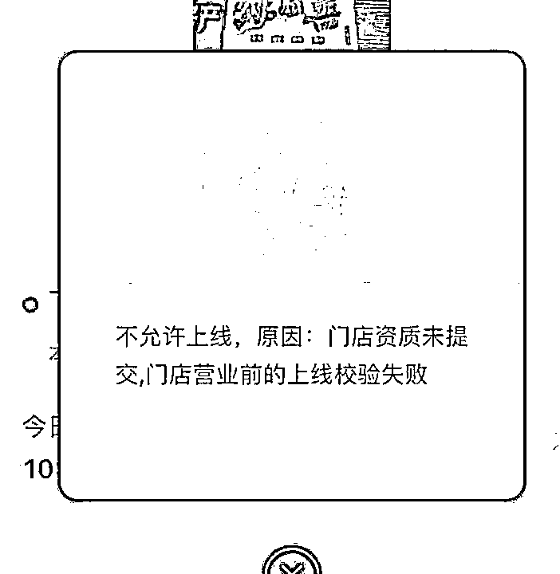
可产看门店管理，门店资质看看是否全部上传，未上传补充营业执照和食品经营许可证等资料提交
也可参考：圈友云天
京东对接的服务商：任推帮
相关资质：确保结算无忧
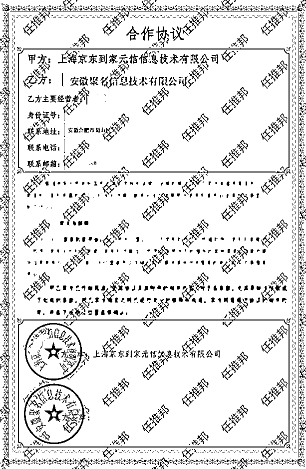
想要推广京东外卖，首先你需要成为任推邦的一员。只需完成任推邦平台的注册并登录，即可报备京东外卖项目，获取推广资格。
开通推广渠道：注册链接
https://dt.bd.cn/#/pages/index/components/detail?appId=891&invite_code=650955
登录任推邦平台后，点击“新上”找到京东外卖项目,进入项目详情页，点击申请推广,审核通过之后即可获取专属商家邀请码。这个邀请码是你推广京东外卖的核心凭证。
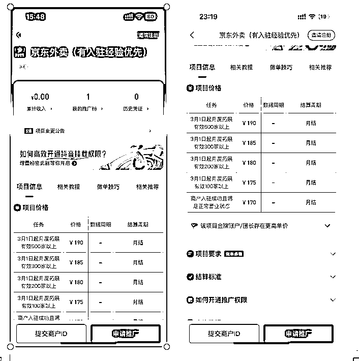
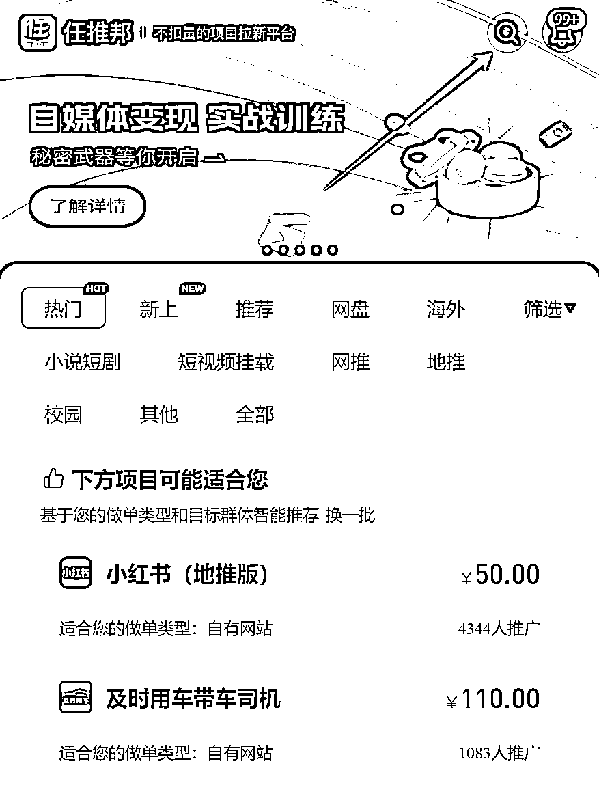
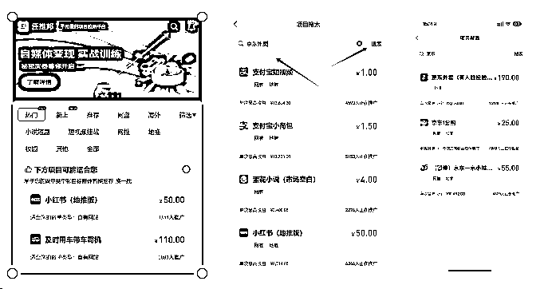
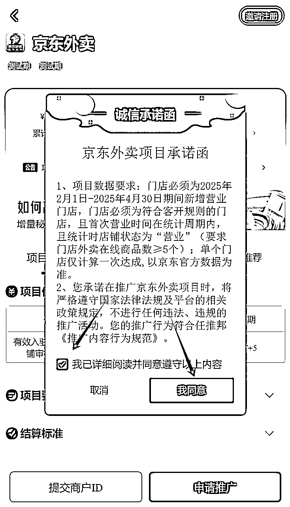
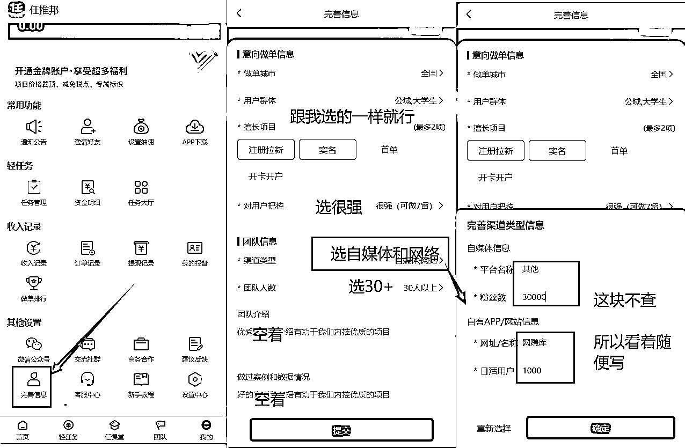
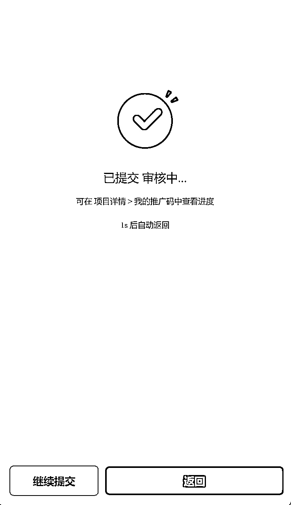
推广操作流程
相关入驻信息：
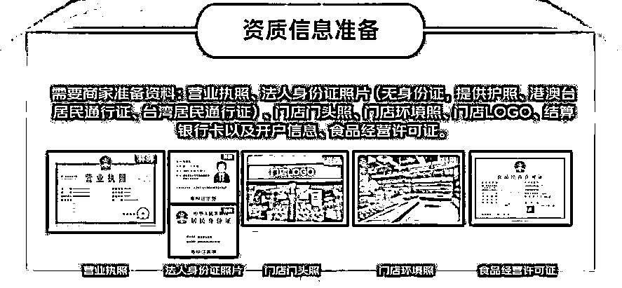
问：全国还是39个城市可以作业？
答：全国可以作业，但是39个城市为重点地区
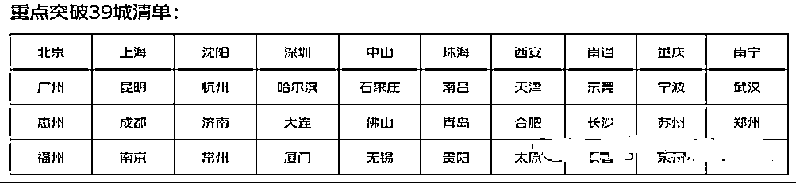
重要通知：最新政策
3月1日起京东外卖可推广城市为125个城市主城区，
即县城和县级市暂不纳入拓展范围之内且不计算为有效商户，125个城市名单见下图
问：有评分要求吗？
答：商户入驻标准：商家有堂食或实体经营店铺（小吃，卤味等），
大众点评3.8分以上或美团高德4.0分以上
（建议不要选连锁店入驻，连锁店京东官方基本已经直签过了）
外卖商家包含：中式及西式正餐、中式及西式快餐、自助餐、海鲜、火锅、烧烤、小吃卤味、下午茶烘焙甜品等符合用户早中晚餐、夜宵等场景需求的商家（咖啡奶茶店/蛋糕店类除外）；
入驻商家必须上架商品数量要参考美团饿了么，保持正常营业状态；
问：商家入驻后没有骑手配送怎么办？
答：在上图的39个城市基本都有骑手配送，如果没有就要商家自己配送，商家不愿意就直接放弃。
先不要上菜单，先看看商家是否有骑手配送：
问：推广员有独立后台吗？
答：没有的，做一单就要提交一次。
商家入驻时必须正确填写”推荐人信息“（即渠道邀请码），邀请码在任推邦报备通过信息内，需要通过商户ID进行数据区分；
请保留【商户ID】及【商户名称】【商家门头照片】并在下方进行提交，禁止批量乱提交否则一律不结算并项目拉黑；
自行保留推广证据和商家相关信息，京东官方不定期抽查，包括但不限于（商家门店照片，地址，营业执照，联系人方式，推广照片或其他证明）；
如因商户未达标或提交商户ID错误，延迟等其他不通过原因等，则无法结算；禁止收取商家手续费用，禁止承诺给商家返现，如有违规操作者取消所有门店推广金；
严令禁止地推团队以明示或暗示京东外卖官方的名义或进行招募团队或邀请商家
需要超级详情的文档小伙伴们可以领取官网提供的文档：
https://www.kdocs.cn/l/cezzzCOSgccS
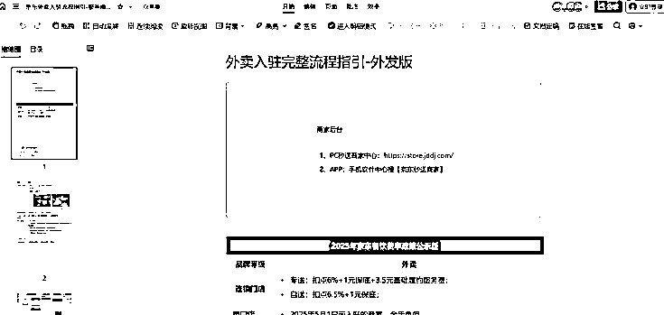
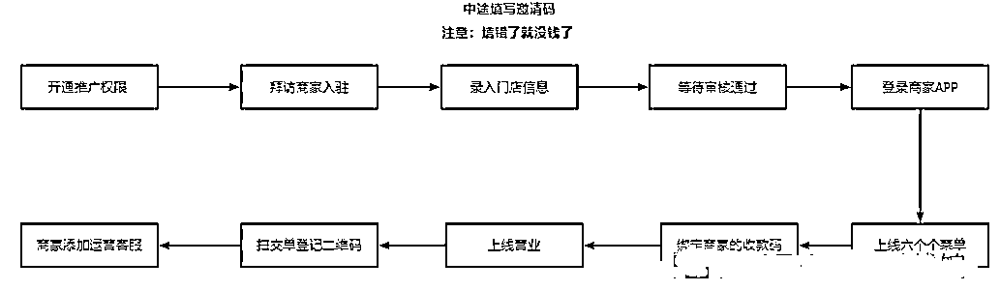
如果安卓手机就在应用商店或苹果手机 就在APP sort 搜索：“京东秒送商家”APP，进行下载。
下载好了之后我们点击下方的入驻申请，然后填写商家的注册信息，这里只是注册账号而已。
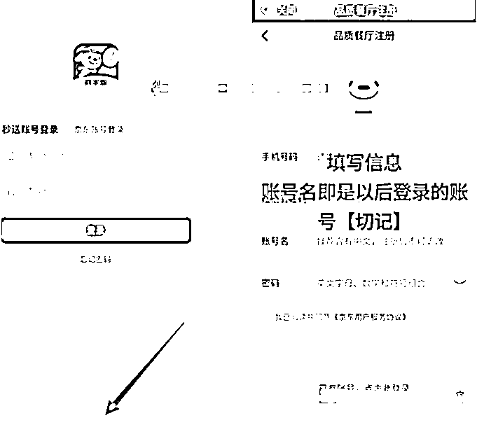
商家入驻类型：如果商家的门店是连锁店我们就选择连锁店，如果不是就选门店申请即可
填写店铺信息：
联系人和联系电话的信息要跟我们注册的账号信息保持一致。
经验品类只能选择咖啡茶饮或者外卖美食
推荐人信息（必须要填写的），这个可以后续再说。
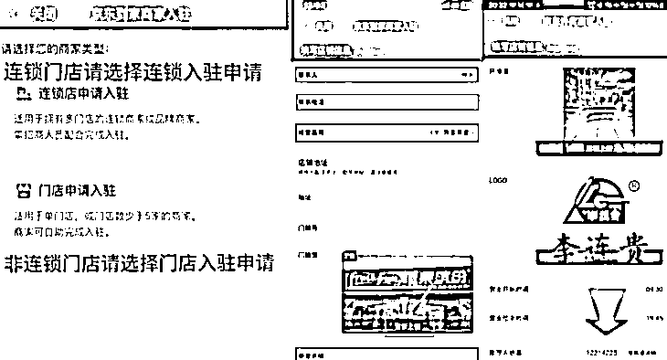
上传营业执照并且选择合同方案、结算和收款方式，我们要保留好商家的ID，方便后面提交
招商审核后需要重新登录商家的账号，并且进行认证，认证选择京东实名
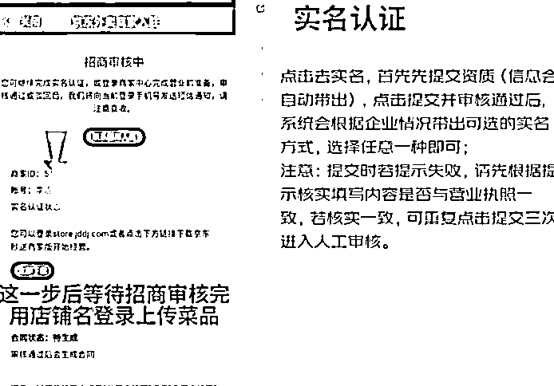
商家操作完成入驻后，需要进入到合同签署流程完成线上签署
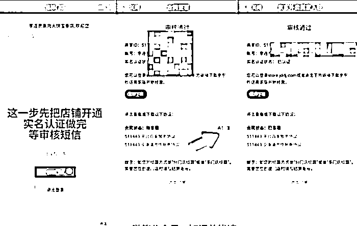
1、填写门店基本信息
点击：经验-->切换门店-->创建门店
门店logo和商家logo要一致，点击使用商家logo即可
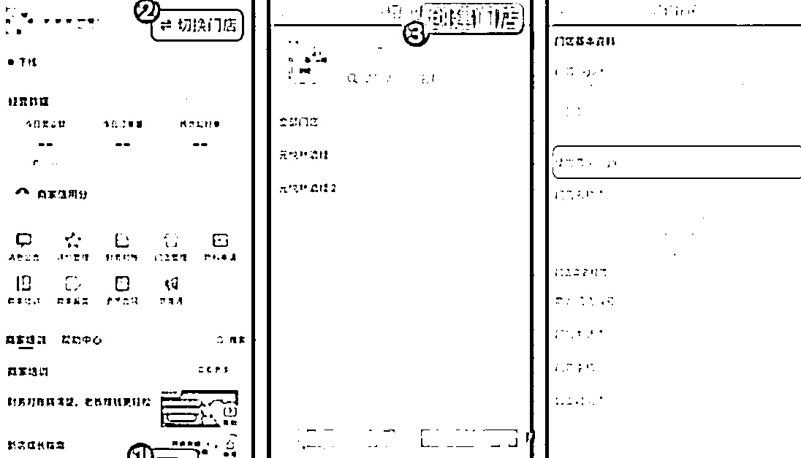
2、地址与配送范围
填写详细地址要和营业执照地址一致，填写配送范围：输入小于6公里的配送范围就可以了。
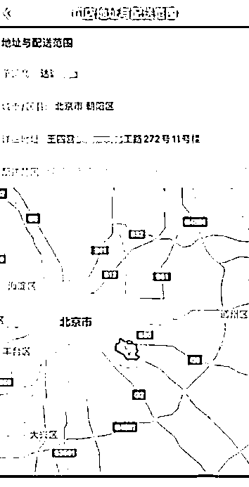
3、门店资质
填写门店经营资质:(营业执照及身份证)注:企业上传身份证需与营业执照法人信息一致
餐饮类选择食品经营许可证，点击确认提交
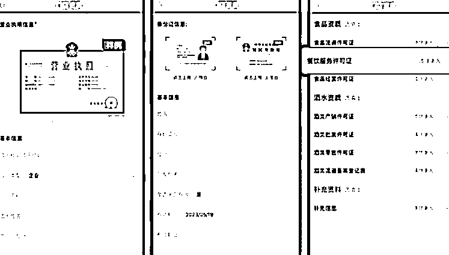
1、创建分类（菜单）
点击：工作台-->商品管理-->分类管理，至少要创建5个分类
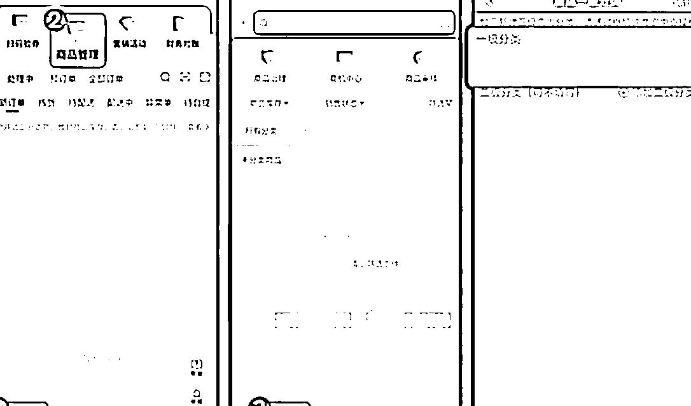
2、商品创建
点击：工作台-->商品管理-->新建商品-->手动创建
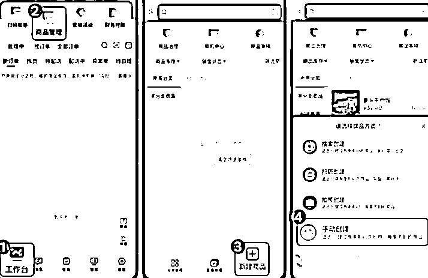
创建商品所需商品图片最多6张，图片尺寸为800*800像素
填写商品品牌:如没有品牌要求，可以填写其他品牌
店内分类为在消费者端展示的商品分类，便于消费者按照分类快速选择商品
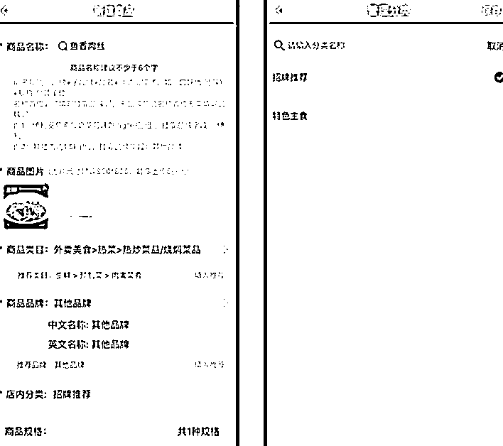
添加规格:(例如大份、小份)，新规格会生成一个新的SKU商品，需要维护新规格的商品价格、库存、最小购买量和打包费
新增口味:(例如微辣、中辣)，商品只会增加一个口味选项不会新增一个新的S鱼香肉丝品
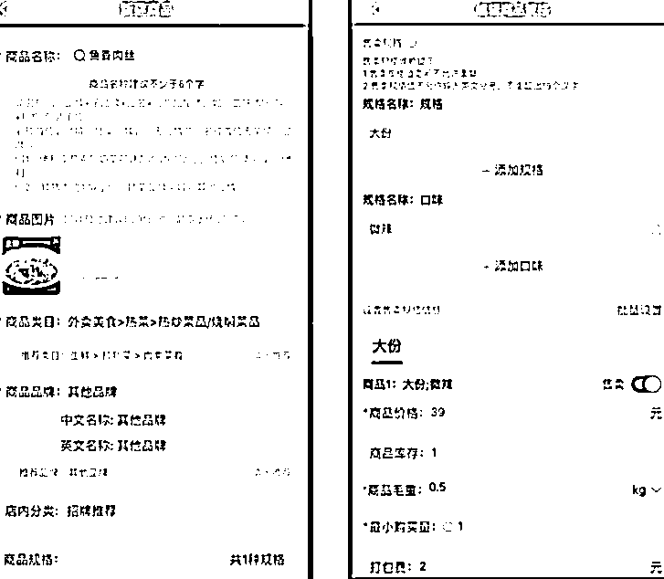
确认好商品规格后，即返回新建商品页面，选择配送属性后，即可保存完成商品创建
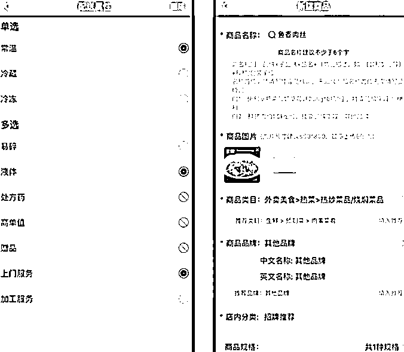
操作点击：经营>门店名称，检查运力是否完成匹配，检查资质是否完备
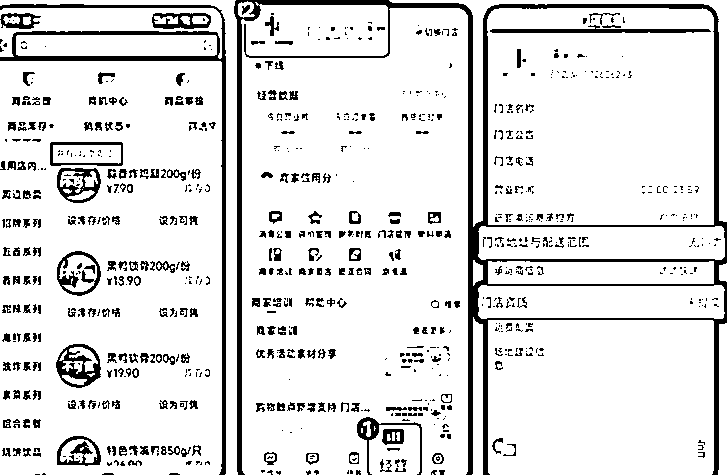
点击操作：经营>资质合同>结算账户
注意：APP端暂不支持门店组结算模式维护结算账户
操作点击：经营>门店状态>今日营业时间
设置营业时间后点击我要营业，即可完成门店上线
以下是一套完整的 **邀请商家入驻话术指南**，包含 **核心场景话术、常见问题应答及解决方案**，可直接用于地推实战：
先通过平台筛选出，大众点评3.8、高德美图4.0商家，基本都会有商家电话
再通过京东—秒送搜索：对方的店铺名称（尤其是营业执照的店铺名字）
先通过电话：确定对方是否入驻？
你可能遇到的难点：尤其3月刚开始做的，可能你周围的商家百分之70都已经被膜拜过了
但他们可能只是拿了注册码——商家ID，保护期45天（但只要在秒送没有搜到）
你是有机会抢来的，因为3月的规则公布后，更强调推广员与商家的实时追踪，尤其上架商品、包括京东钱包的开通，这个很考验你前期跟商家搭建的信任度.....
这个时候会大概率，淘汰一批，只做拉新的朋友，因为审核要求你实时追踪商家
图片来源——彻易：
陌拜之前：熟练掌握你的话术与应变技巧，服务的态度、不要一个拒绝就转头就走
尽可能让自己专业一点（衣服，工作证等）
错开高峰期，尤其餐饮，真不建议上午10点左右
以下是针对餐饮行业不同类目上门拜访的黄金时间分析，
结合行业规律与客户行为特点，提供最佳时段建议及策略：
三、奶茶/咖啡店
图片来源——彻易：
不同类目餐饮商家的黄金拜访时间需结合其营业节奏与客户行为，**核心原则是避开高峰、利用空闲期**，同时通过精准话术与数据工具提升转化率。建议地推团队根据商户类型灵活调整时段，并辅以限时政策（如“前50名签约享额外补贴”）制造紧迫感。
进门话术：
哥，你好，我们是京东外卖官方的，邀请您免费0元入驻。免佣金。
姐，你好，京东外卖官方人员，今天来帮你开通提供一下京东外卖，免费的，不抽商家佣。
目标：30秒内引起兴趣，建立信任
场景：进入门店，老板正在忙碌
地推人员：
“老板您好！我是京东外卖的区域经理**（递名片）**，注意到咱们店的**（菜品/环境/人气）**特别棒！但可能线上订单还没完全开发出来。
京东现在针对优质商家有独家扶持政策：
✅ **前3个月抽成直降5%**（比如其他平台抽20%，我们只抽15%）
✅ **新店首月保底200单**，达不到我们补流量
✅ **专业团队免费帮您上架商品**，您只管接单
占用您2分钟，给您看个数据案例？”
（快速打开手机展示同品类商家数据）
动作要点：
本项目目前处于测试期，建议推广员前期少量测试，届时全面放开再大力推广，所以各位提前布局，肯定没错、
以上为今天的分享，希望能帮助到大家
应答策略：强调增量市场，弱化竞争
话术：
“您说得对！美团确实覆盖广，但他们的用户主要追求低价。
京东用户画像完全不同：
🔹 35-45岁中高收入家庭用户占比超60%
🔹 客单价平均比美团高40%
🔹 **适合咱们店**的**（高品质套餐/家庭餐）**
比如**（指向招牌菜）**这种**（78元双人套餐）**，在美团可能难卖，但在京东能成爆款。
您就当多开一家‘精品分店’，我们负责引流，您零成本试错。”
解决方案：
应答策略：动态拆解成本，捆绑资源
话术：
“您关注的特别对！表面上我们抽15%，美团可能说他们抽12%，但实际成本不一样：
🔸 美团虽抽成低，但**强制您参加满减活动**（如满30减10），实际利润只剩50%
🔸 京东抽15%但**不强制打折**，您定价自主权更高
比如您一份套餐卖40元：
应答策略：降低心理门槛，提供代运营
话术：
“您完全不用担心！我们有两种合作模式：
① **极简模式**：您只需给菜单和价格，我们团队免费拍照、上架、设置活动，您每天花3分钟核对订单就行
② **全托管模式**：您指定一个店员，我们培训他30分钟就能独立操作
您看这是**（同商圈XX炸鸡店）**的后台，他们老板说每天只用扫码确认订单就行。”
（展示操作视频+商家聊天记录）
解决方案：
应答策略：制造紧迫感，阻断拖延
话术：
“特别理解！但现在有3个关键信息您需要知道：
1️⃣ **本周入驻的商家**可锁定首页黄金展位（滑动展示展位截图）
2️⃣ **前50名签约商家**额外获得500元推广补贴（打开名额剩余提示页面）
3️⃣ 我们的运营经理明天就在这栋楼帮**（竞对商家名称）**上线
您今天签协议，我保证明天优先处理您的店铺，错过这波流量就太可惜了！”
动作要点：
应答策略：对赌协议+流量兜底
话术：
“您担心的完全正确！所以我们敢签**保底协议**：
📝 如果首月日均单量低于15单，我们补偿300元推广金
📝 如果连续两周单量垫底，允许您随时退出且不扣保证金
这是我们和**（附近知名商家）**签的协议模板，您看这条款对您绝对有利。”
解决方案：
目标：消除最后犹豫，现场签约
地推人员：
“老板，我现在就帮您走快速通道：
1️⃣ 扫码填写基础信息（5分钟）
2️⃣ 我们的设计师今晚帮您做店铺装修
3️⃣ 明天中午12点准时上线接单
您只需要决定：
🔹 是现在签，锁定首页流量位+500元补贴？
🔹 还是等明天竞对上线后，用2倍成本抢市场？”
动作配合：
| 商家拒绝话术 | 错误回应 | 正确话术 |
|---|---|---|
| “抽成太高” | “我们比美团服务更好” | “抽成高是因为利润更高，我帮您算笔账…” |
| “没听说过京东外卖” | “我们刚起步” | “正因为刚开拓本地市场，您才能吃到第一波红利！” |
| “要和合伙人商量” | “那我明天再来” | “理解！您合伙人最关心什么问题？我现在准备资料” |
这套话术体系经过多个城市实测，可将签约率从行业平均8%提升至22%。关键点在于：
1、为了更好的和你沟通，需要申请推广权限的，可私聊
2、机会不会等人
外卖市场没有“等等再说”，只有“现在就干”！
当别人还在犹豫时，你每抢先进店邀请一次就比别人多一百多佣金进账的机会；到门店逮到老板就是问
京东外卖店铺入驻评分要求
美团≥4分抖音≥4分高德≥4分
大众点评3.8分 四选一即可
必须【团购】里的完整截图
不能带外卖 快送字样
优先高德评分当天过审！
Q1：全国可做还是39城可作业？
答：125个城市为重点推广地区，但是全国均可推广。
Q2：商家评分看哪里？
答：大众点评APP里，只看评分3.8以上或3.8的餐饮店，低于的请放弃。
Q3：用户是怎么点京东外卖？
答：在京东APP首页最上方点击“秒送”。
Q4：商家入驻后是否入需要上架商品？
答：需要，至少上传5个。
Q5：是否需要对公账户？
答：需要，若个体商家没对公账户，可以使用法人银行卡。
Q6：有的城市点不进去什么情况？
答：检查商家是否操作流程错误。
Q7：基础配送费多少？
答：3公里内3元(可商家承担或用户承担)。
Q8：商家提现及到账时间？
答：3+1，3天后到账商家端，提现到账T1。
Q9：商家资料提交后，审核时长多久？
答：京东人工审核，前期不能保证（建议加商家微信，告知通过后提醒，二次回店协助上商品营业）。
Q10：商家需要操作到哪个环节才属于成功有效，算可结算数据？
答：商家入驻后，上线5个商品或以上，开启商家营业后，就算成功有效。
Q11：商家接受度怎么样?
答：根据市场调研，大部分商家都会同意入驻（相较于其他外卖平台抽成、服务费高等情况，京东上线就是0佣金，推广起来有优势。)
Q12：店铺装修采单需要推广员上传么？
答：不需要。
Q13：推广员有独立后台吗？
答：没有，后续可能也不会有，需返回“任推邦”平台京东外卖项目详情交单。
Q14：连锁门店算几家门店的佣金?
答：按照门店数量算（例如连锁店有10家那么佣金*10倍，目前同一品牌连锁店最高可以享受上限100个店铺推广金）。
Q15：商家的店铺管理后台是哪个？
答：手机APP端：手机应用商店搜索【京东秒送商家】
电脑端网站：https://store.jddj.com
本项目目前处于测试期，建议推广员前期少量测试，届时全面放开再大力推广，所以各位提前布局，肯定没错、
以上为今天的分享，希望能帮助到大家
门店首次开启营业状态后30天内，有效营业天数≥14天
官方有效营业的定义为同时满足以下条件：
(1）门店审核通过并上线营业；
(2）有效营业日的单日营业时长≥4小时；
(3）商品原价不高于美团或饿了么原价；
(4）商品数量不少于美团或饿了么；
(5）门店有效单量：门店首次开启营业状态后30天内完成订单量≥3单
结算周期依旧为月结，一般次月20日左右出账单，最终结算数据以京东官方为准
本次考核政策适用于2025年3月1日～2025年3月31日期间首次开启营业的门店（注：2025年2月28日24点前通过门店审核，并在2025年3月10日24点前开店营业的门店按照2月激励标准执行）
月商家入驻结算政策：京东将在3月1日-3月15日期间随机抽取一天查看商户是否处于营业状态，如处于未营业状态则无效不结算，综合情况我方做出如下调整：
1.针对2月26日前提交的商户ID，
结算依然按原来标准和时间进行结算，尽量让商家上传更多商品且保持营业状态；
2.从2月26起提交的商户ID将按京东新规结算，周期为月结，结算时间为店铺入驻后次月20日前；
3.商户入驻审核通过后，最低上架15个商品（最好同步美团商品数量）；
4.商户必须完成实名认证+签订电子合同+绑定京东钱包+上线运营；
5.商户需坚持正常营业期间在线并在3月1日-3月15日期间保持营业中状态，否则不予结算；
6.平台在【查询数据】处开通店铺状态查询入口，可查询店铺状态，方便大家对店铺后期维护；
温馨提示：
1.京东外卖正处于完善店铺入驻系统和结算流程的阶段，建议有美团抖音拓店经验+商户运营经验的团队尝试；
2.京东外卖目前侧重店铺运营，建议可与商户保持联系加微建群等，维护商户正常营业；
----------------------
注意：报备信息通过后，任推邦通过信息内会返“推荐人信息”（即商户邀请码），商家入驻时需填写在“推荐人信息”一栏，否则无法结算！
1、入驻商家需正常营业餐饮店铺！
禁止以虚假门店、“无场地外卖店铺“冒充等虚假信息、虚假销售等违规方式推广；
2、京东外卖商家入驻遵循“先到先得”原则，
谁先提交【商家ID】，数据归属于谁，判定标准以京东外卖官方反馈为准，介意者勿做；
3、请保留正确【商户ID】及【商户名称】
【商家门头照片】在下方进行提交，严禁乱提交或挨个门店ID去试，如发现全部不结算并拉黑账号；
4、具体商家入驻标准与结算标准请留意下方【项目要求】和【结算标准】；
5、禁止收取商家手续费用，禁止给商家返现，如有违规操作者取消所有门店推广金；
6、严令禁止地推团队以明示或暗示京东外卖官方的名义或进行招募团队或邀请商家；
本项目结算周期为月结，结算数据以京东官方反馈为准，介意者勿推广
谷歌浏览器下载地址：https://www.google.cn/intl/zh-CN/chrome/?
美团后台（必须谷歌浏览器登录）：https://e.waimai.meituan.com/new_fe/login_gw#/login
京东链接（必须谷歌浏览器登录）：https://store.jddj.com/login?view=cco
步骤一：解压文件
步骤二：登录商家美团和京东后台
步骤三：谷歌浏览器右上角设置——扩展程序——管理扩展程序
步骤四：右上角 “开发者模式” 点开——点左上角“加载已解压的扩展程序”，把解压好的文件夹都上传
我可以给大家提供免费京东外卖入驻咨询 优质服务商推介 地推渠道介绍，欢迎找鱼丸对接
（好不容易写出来的，希望大家点点赞，我也想要一颗龙珠）
2月11日，京东外卖宣布，正式启动“品质堂食餐饮商家”招募，2025年5月1日前入驻的商家，全年免佣金。
近期，新京报贝壳财经记者了解到，京东外卖业务早在去年就已上线并在2022年就已进行相关业务试水。
不过，与去年年底不同，目前外卖已在京东APP秒送专区中被设置成单独入口，并上线海底捞、袁记云饺、汉堡王等多个连锁餐饮品牌，餐饮品类明显增多。
据接近京东的知情人士透露，已签约商家佣金从2月11日0时起，也按照全年免佣调整。
新京报贝壳财经记者采访美团、饿了么等平台上线餐饮商家得知，目前北京地区外卖平台抽成一般为20%-30%（部分平台抽成包含佣金、配送服务费、活动支出等），很多商家表示，还不知道京东外卖。
从轻餐饮品类逐渐扩展，外卖设单独入口商家增多
随着数字经济的蓬勃发展，外卖行业已成为各方势力竞相角逐的新战场。
京东方面表示，上述招募只限“品质堂食餐厅”。京东外卖将为入驻商家提供全方位支持。
根据京东应用程序显示，在最近更新的京东应用程序中，秒送入口被设置在首页首屏位置，秒送页面中设置超市便利、咖啡奶茶、团购、生鲜菜场、外卖等入口。而在去年上线外卖时，还未有外卖的单独入口。
外卖已被设置为单独入口。应用程序截图
彼时，秒送专区优先显示的品类是生鲜菜场、急用数码、超市便利、咖啡奶茶、买药秒送，且页面上方会随机浮动显示“免运费”“49减5”“抽免单”等补贴福利。新上线的汉堡王和永和大王等快餐暂被设置在咖啡奶茶专区内。入驻的品牌包含瑞幸、库迪、蜜雪冰城等常见品牌。
目前来看，除了入口变化外，餐饮品类明显增多。此前外卖更多聚焦在轻餐饮的布局之上，最新外卖页面显示，炒米粉、水煮鱼等也有一定涉猎，相较去年品类明显增多。
2023年，抖音、微信先后传出了下场做外卖的消息。2022年6月，京东也被曝将入局外卖，时任京东零售首席执行官的辛利军在接受媒体采访时表示，京东正在研究进军外卖领域的可能性。“
至于什么时候开始做，这将取决于我们的能力，以及我们什么时候能够建立起一个人才团队。”彼时，新京报贝壳财经记者从京东内部获悉，起初京东仅在业务试水阶段，具体是否入局外卖，如何进行仍需要在经营分析会上定夺，项目并未完全敲定。
尽管此前京东已为外卖业务搭建了即时配送队伍，后续京东外卖并未正式上线。新京报贝壳财经记者了解到，因战略调整，京东选择聚焦主业、降本增效，许多此前曝光的新业务在京东内部被叫停，外卖业务也迟迟未见上线。
2024年以来，随着消费行业复苏，利润改善后的京东也逐渐回血，新业务在近年逐渐重启。其中就包括外卖业务。2024年9月，新京报贝壳财经记者发现，京东秒送上线了快餐代表汉堡王和永和大王等餐饮。
内部人士透露，秒送战略地位升级，京东外卖业务布局以轻餐饮为突破口。目前看来，随着业务的深入，京东外卖的品类将不限于轻餐饮，上线商家增多。针对运费方面，上述接近京东人士透露，配送服务费由配送距离、订单价格、时段、天气等因素综合决定。
外卖平台佣金大多为20%以上，商家期待更多平台加入外卖战局
针对佣金（抽成）问题，多位餐饮商家表示，不同平台会带来不同的单量，也会有不同的佣金与补贴。
北京陈记手擀面老板向记者表示，现在外卖商家竞争激烈，他在饿了么和美团平台每单实际收入比例为70%，他表示目前并不知道京东平台可以做外卖。
张记猪脚饭老板告诉新京报贝壳财经记者，他的店铺在美团和饿了么两家店铺都有入驻，提供外卖配送和自取的服务。
他表示，目前餐饮外卖基本入驻上述两个平台，就他的店而言美团每单收入比例为77%，一天单量约为100单；饿了么每单收入比例为75%，一天单量约为50单。
多位商家在接受新京报贝壳财经记者采访时表示，期待有更多平台可以做外卖，更看重平台能带来的单量和补贴，目前部分平台骑手的配送费大部分由商家承担，与此同时，同行商家很多竞争激烈，商家普遍称在平台抽成的背景下也不太敢提升商品单价，害怕流失客户。
互联网巨头纷纷加码外卖业务，背后反映出本地生活服务市场的巨大潜力。根据中国互联网络信息中心发布的最新数据，截至2023年12月，我国网上外卖用户规模已达5.45亿人。与此同时，该市场的份额已突破万亿大关，且保持快速增长的态势。
本地生活服务市场涵盖了餐饮外卖、休闲娱乐、旅游出行等多个细分领域，对于互联网巨头而言，其不仅是一个庞大的流量入口，更是一个实现多元化业务布局、提升综合竞争力的关键所在。
本地生活服务市场的消费群体庞大且稳定，他们对于便捷、高效、个性化的服务有着强烈的需求。巨头们通过布局外卖等本地生活服务业务，能够更好地满足消费者的需求，从而提升用户黏性。此外，该市场与其他业务领域有着紧密的联系，如电商、金融等。通过布局本地生活服务市场，巨头们可以实现各业务之间的协同发展，进而提升整体的业务效率和盈利能力。
但近年来消费者对于性价比的重视程度有所提升，“电商送外卖，外卖平台做电商”是基于市场需求、用户基础、市场竞争、战略布局、技术驱动和创新能力等多方面的综合考虑。
商务部研究院电子商务研究所副研究员洪勇表示，万物到家的时代正在加速到来，即时零售将成为企业转型升级新渠道。现在线下的零售商通过获得消费者的数据，传导到制造商领域，拉动经济的动能进一步增强。洪勇还称，智能物流与即时零售步入协同化发展新阶段，“现在我们已步入老龄化的时代，随着即时配送的发展，对配送员的要求越来越高，未来可以通过无人机、无人车等方式，创新配送模式”。
新京报贝壳财经记者程子姣
编辑 岳彩周
校对 穆祥桐